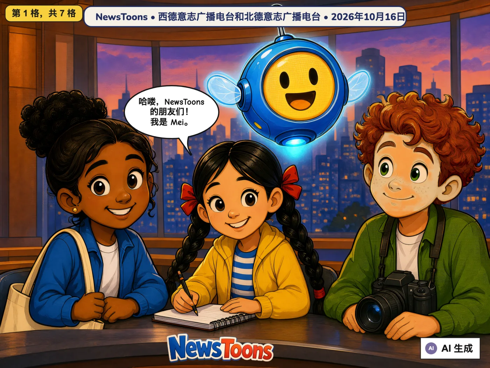
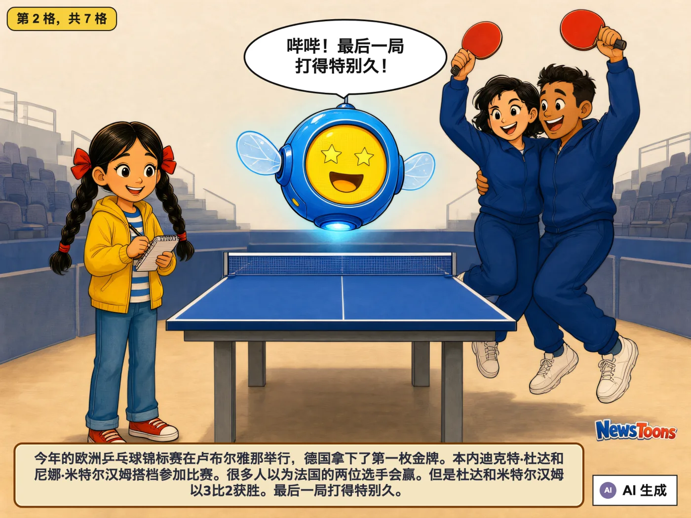
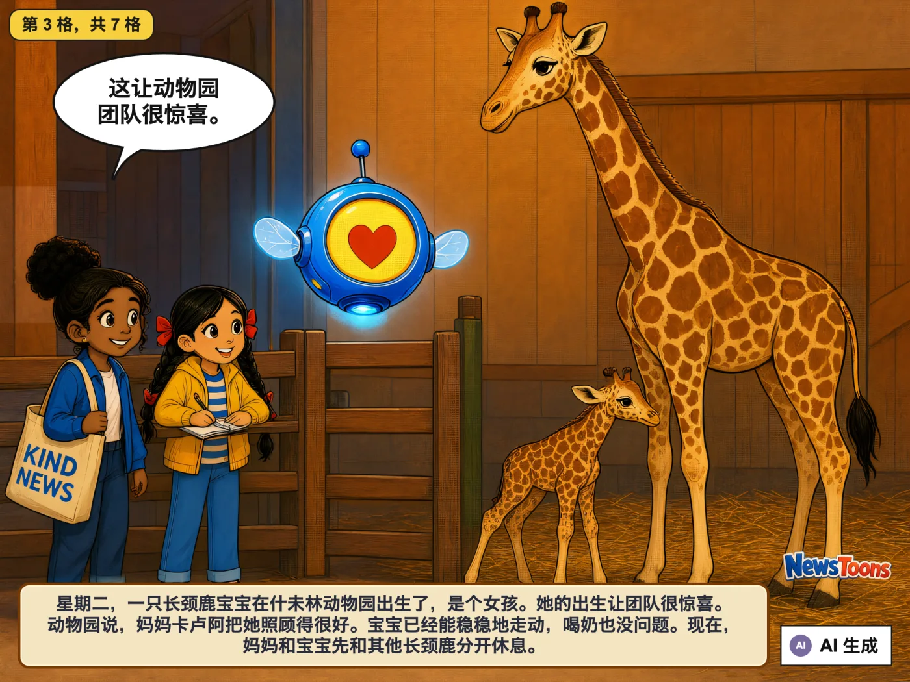
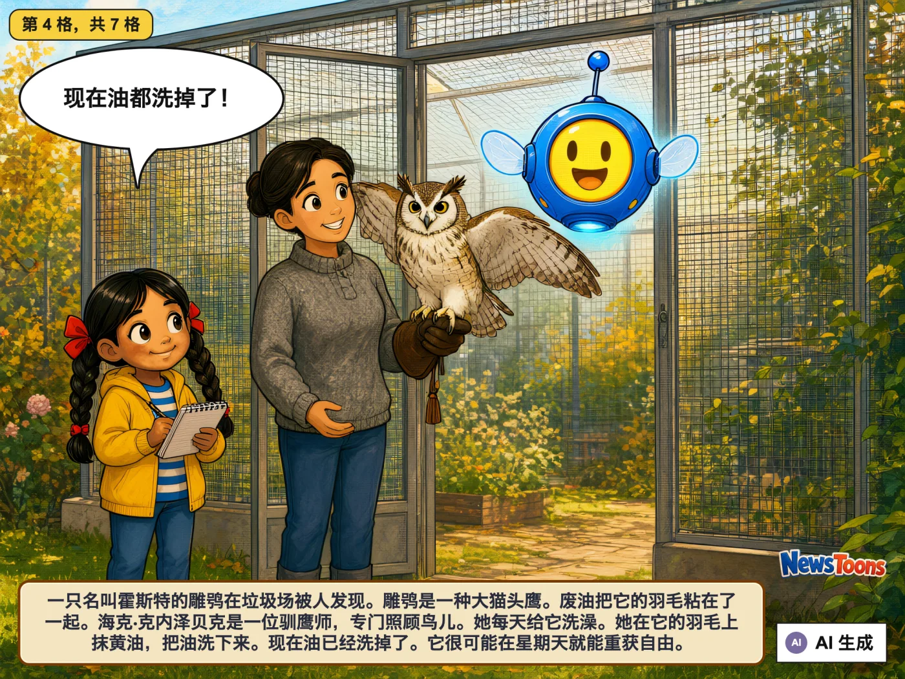
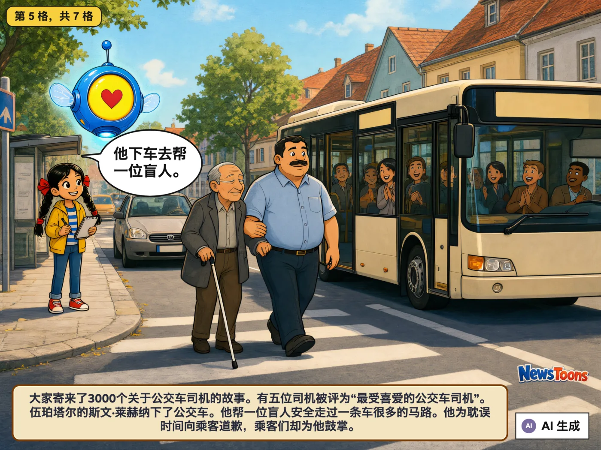
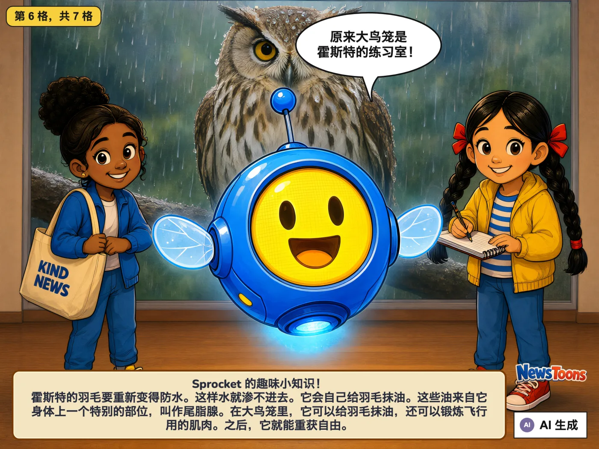
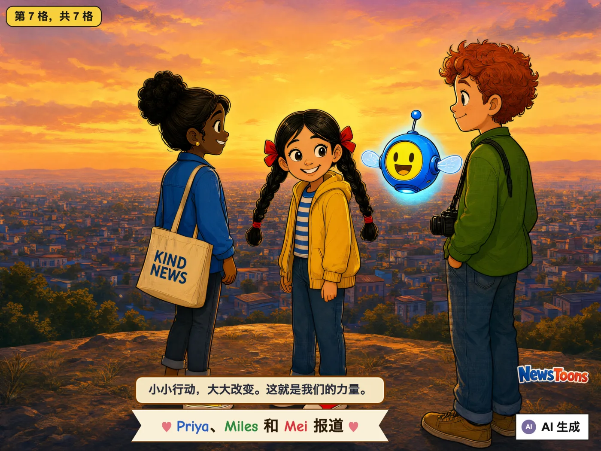

乒乓球金牌、长颈鹿宝宝、变干净的猫头鹰和贴心的公交车司机
🇩🇪 来自德国 · WDR, NDR · 译自原文： Deutsch
球台上的金牌长颈鹿宝宝霍斯特变干净了最受喜爱的公交车司机Sprocket 的趣味小知识







今天的新闻，明天的冒险 ✏️✨
给所有年龄的孩子
🇩🇪 来自德国 · WDR, NDR · 译自原文： Deutsch
球台上的金牌长颈鹿宝宝霍斯特变干净了最受喜爱的公交车司机Sprocket 的趣味小知识






